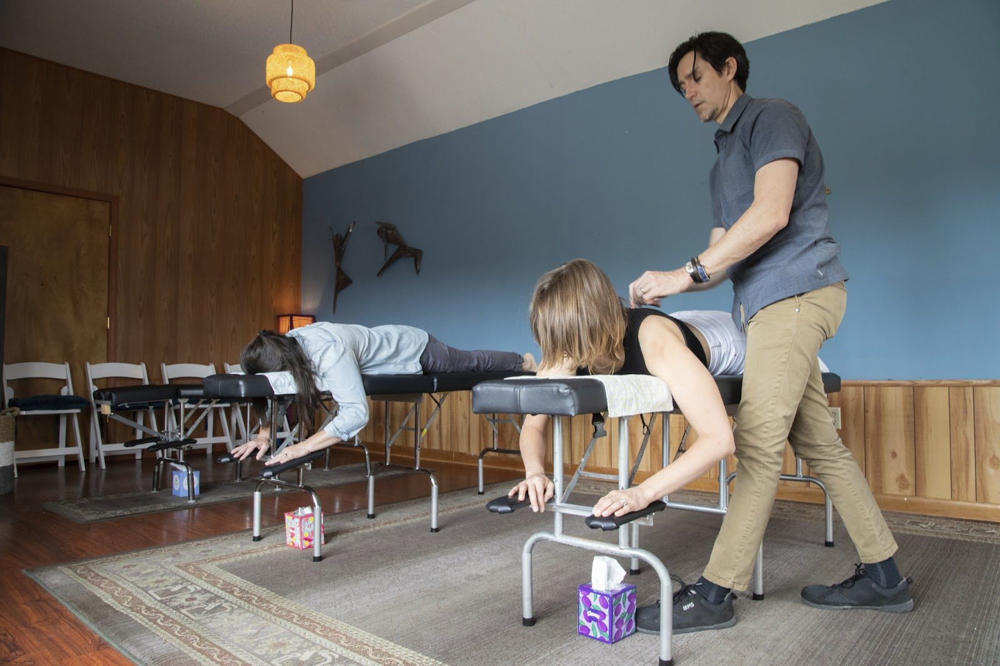
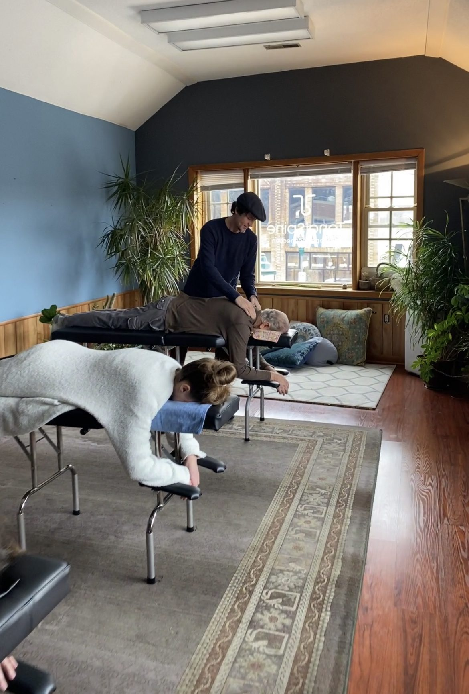
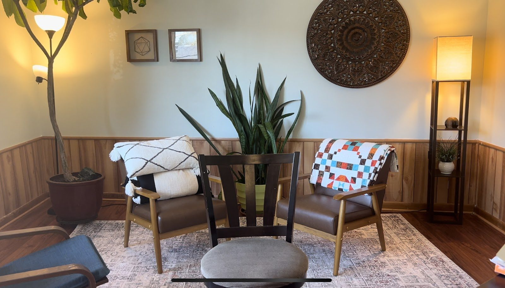
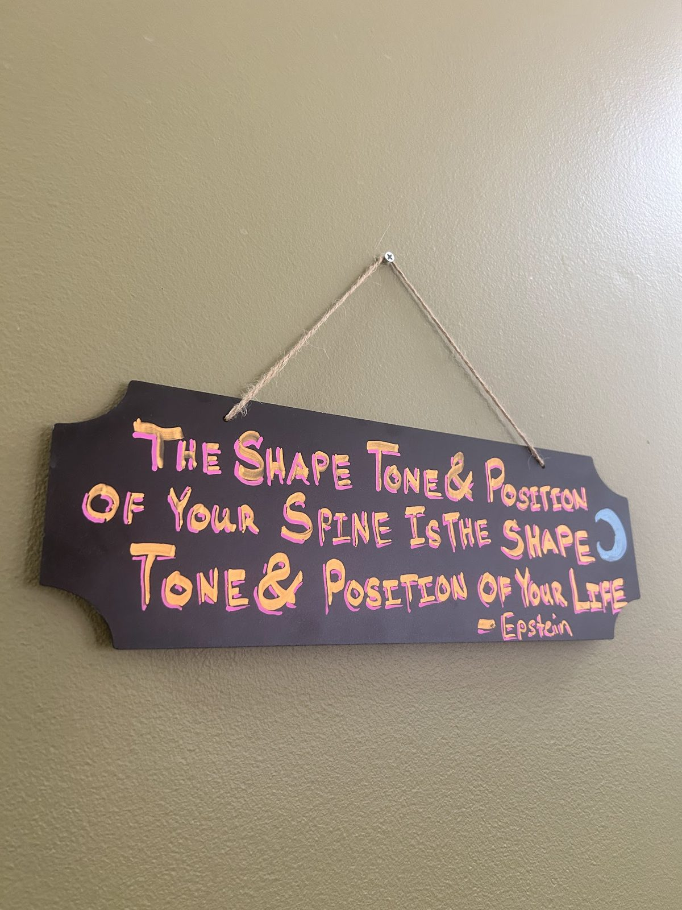

A deeper connection.
Holistic chiropractic care in Chattanooga using NetworkSpinal techniques, led by Dr. Dave Aitken.
Tonal Spine Chiropractic is a holistic chiropractic practice in Chattanooga. The care centers on nervous-system function, congruence, and interference, with checks by appointment.
01
NetworkSpinal care
Holistic chiropractic care at the Chattanooga practice, using NetworkSpinal techniques led by Dr. Dave Aitken.
02
Nervous-system focus
Care centered on how the nervous system works, on congruence, and on interference.
03
Checks by appointment
Checks are by appointment, led by Dr. Dave Aitken. Call to ask about scheduling.
Dr. Dave Aitken
Dr. David Aitken has practiced in Chattanooga since 2016. Chiropractic care helped him return to playing guitar.
He leads the practice at 110 Woodland Ave, where the care centers on nervous-system function, congruence, and interference.



Hours
Monday to Thursday, 8:00am to 6:30pm. Friday, 8:00am to 5:00pm.
Questions? Call +1 423-498-3330.